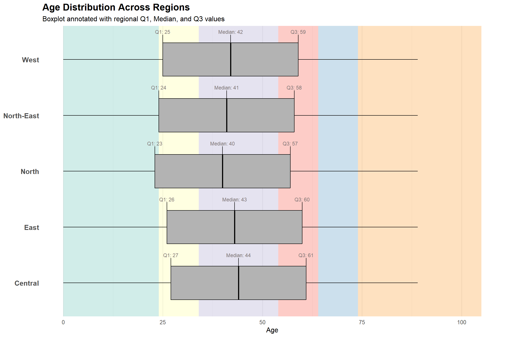
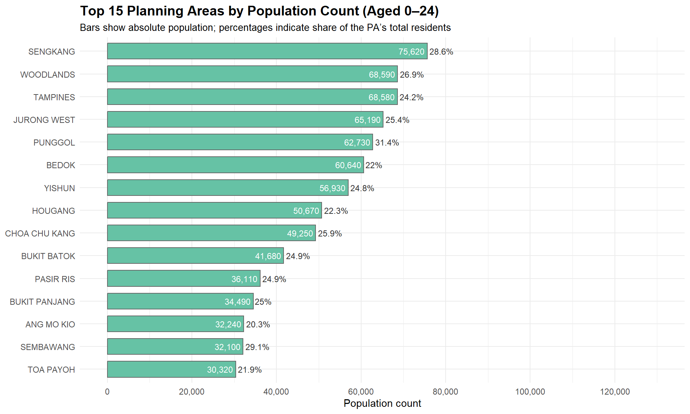
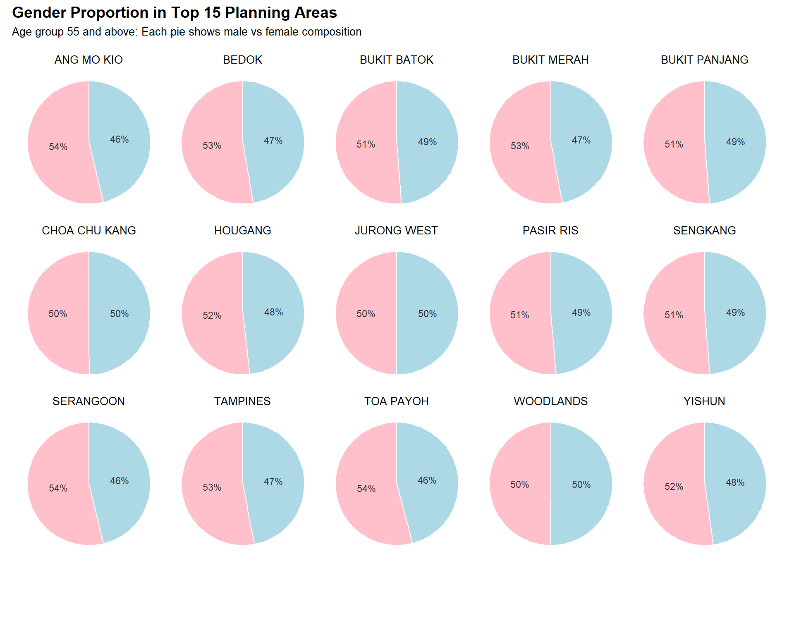

pacman::p_load(
tidyverse, # Core data manipulation and ggplot2 plotting
knitr, # Dynamic report generation and rendering
patchwork, # Combines multiple ggplot2 plots
ggthemes, # Additional themes and visual styles
scales, # Formatting axes, scales, and labels
ggtext, # Rich text formatting in ggplot titles/labels
ggalt, # Dumbbell, lollipop, and other advanced geoms
ggridges, # Ridgeline plots to visualize distributions
ggpubr, # Publication-ready ggplot2 enhancements
ggExtra, # Marginal plots for added insight
cowplot, # Publication-quality figure alignment
ggnewscale, # Allows multiple color/fill scales in one ggplot
ggrepel # Allows
)Take-Home Exercise 1
1. Overview
Setting the scene
A local online media company that publishes daily content on digital platforms is planning to release an article on demographic structures and distribution of Singapore in 2024.
The task
Assuming the role of the graphical editor of the media company, the task was to prepare at most three data visualisation for the exercise.
Hence in this exercise, I curated three key visualisations as part of dats exploration:
- Generational Distribution by Region: A paired bar chart highlights both absolute and relative generational makeup across Singapore’s five planning regions, revealing the Central and East as home to proportionally older populations.
- Age Demographics by Planning Area: A boxplot with overlaid generation bands showcases median age and interquartile ranges, emphasising regions with mature population profiles like Central and West Singapore.
- Top Planning Areas by Age Band: A set of ranked bar charts and accompanying pie charts depict the top 15 planning areas by population size in three age segments—youth (0–24), adults (25–54), and seniors (55+). These are complemented with gender breakdowns to visualise demographic imbalances.
2. Getting started, Data Loading and Preparation
This section documents the process of preparing the dataset for analysis and visualization. It covers the loading of R packages, initial inspection of the dataset, and the necessary wrangling and transformation steps applied.
2.1 Load required packages üì¶
Before importing the data, we load several R packages from the tidyverse ecosystem and supporting libraries for data wrangling and visualization. These packages streamline data processing and produce publication-ready plots using ggplot2. This setup ensure that we have both the flexibility and power to craft expressive, publication-quality demographic visualizations for the report.
üìå Summary of Package Roles
| Library | Description |
|---|---|
| tidyverse | A collection of core packages designed for data science, used extensively for data preparation and wrangling |
| knitr | Generates dynamic R markdown or Quarto reports |
| patchwork | Combine multiple ggplots into a single layout |
| ggthemes | Provides extra themes (e.g. economist, wsj) |
| scales | For data/axes label formatting and annotations for ggplot2 |
| ggtext | Supports improved and rich text rendering for ggplot2 |
| ggalt | A compendium of ‘geoms’, ‘coords’, ‘stats’, scales and fonts for ggplots2 |
| ggridges | For ridgeline plots that create the impression of a mountain range. They can be useful for visualising changes in distributions over time or space. |
| ggpubr | For publication-ready plots. |
| ggextra | For adding marginal plots to ggplot2 |
| cowplot | Provides precise figure alignment and plot annotation |
| ggnewscale | Enables multiple fill/colour scales in a single plot. For defining scales in ggplot2. |
| ggrepel |
We load the following R packages using the pacman::p_load() :
2.2 Loading the Data and Taking a Glimpse of the Dataset üìÇ
The dataset, Singapore Residents by Planning Area / Subzone, Single Year of Age and Sex, June 2024, published by the Department of Statistics, Singapore (DOS) was loaded using the read_csv() function from the readr package in the tidyverse collection.
# Load the dataset
df <- read_csv("Dataset/respopagesex2024.csv")The dataset contains 60,424 rows and 6 columns. Each row represents the count of residents for a specific combination of planning area, subzone, age, sex, and year.
glimpse(df)Rows: 60,424
Columns: 6
$ PA <chr> "Ang Mo Kio", "Ang Mo Kio", "Ang Mo Kio", "Ang Mo Kio", "Ang Mo K…
$ SZ <chr> "Ang Mo Kio Town Centre", "Ang Mo Kio Town Centre", "Ang Mo Kio T…
$ Age <chr> "0", "0", "1", "1", "2", "2", "3", "3", "4", "4", "5", "5", "6", …
$ Sex <chr> "Males", "Females", "Males", "Females", "Males", "Females", "Male…
$ Pop <dbl> 10, 10, 10, 10, 10, 10, 10, 10, 30, 10, 20, 10, 20, 30, 30, 10, 3…
$ Time <dbl> 2024, 2024, 2024, 2024, 2024, 2024, 2024, 2024, 2024, 2024, 2024,‚Ķüßæ Variable Descriptions
| Column | Type | Description |
|---|---|---|
PA |
Categorical | Planning Area (e.g., Ang Mo Kio, Bedok) |
SZ |
Categorical | Subzone within each Planning Area |
Age |
Categorical (to be converted) | Age in single years (e.g., 0–100+) |
Sex |
Categorical | Gender: Male / Female |
Pop |
Continuous (Integer) | Number of residents (rounded to nearest 10) |
Time |
Identifier / Constant | Time period (always 2024 in this dataset) |
2.3 Wrangling, Cleaning & Transformation üßπ
To ensure the data is ready for exploratory visualization and demographic analysis, a series of wrangling and transformation steps are applied. These steps are logically grouped and reusable across multiple visualization tasks.
✅ Convert Age to Integer
The Age column is stored as a character string (e.g., "100+"), which can prevent proper sorting, numeric comparisons, and calculations. I converted it to an integer, coercing "100+" to 100, and remove any missing or malformed entries.
This step ensures that age values are usable in:
- Population pyramids
- Median age calculations
- Age band groupings
df <- df %>%
mutate(Age = as.integer(Age)) %>% # Convert to numeric (100+ becomes NA)
drop_na(Age) # Remove missing values caused by conversion✅ Create AgeBand for Grouped Analysis
Working with 101 separate age values (0–100) may clutter visualizations and dilute insight. Therefore, I bin the ages into meaningful age bands for easier demographic comparison and comparative visualization. These age bands are especially helpful for:
- Grouped bar charts
- Age structure comparisons across planning areas
df <- df %>%
mutate(AgeBand = cut(Age,
breaks = c(0, 5, 10, 15, 20, 25, 30, 35, 40, 45, 50, 55,
60, 65, 70, 75, 80, 85, 90, 95, 100, Inf),
labels = c("0-4", "5-9", "10-14", "15-19", "20-24", "25-29",
"30-34", "35-39", "40-44", "45-49", "50-54",
"55-59", "60-64", "65-69", "70-74", "75-79",
"80-84", "85-89", "90-94", "95-99", "100+"),
right = FALSE))✅ Aggregate for Exploratory Plots & Key Insights
The data was group by Planning Area, Sex, and Age Band to prepare for visual comparisons across demographic segments. Using the code below, we can compute the aggregated population totals across:
- Age × Sex: for national pyramids
- Planning Area: for ranking and spatial comparisons
# For population pyramid (Age-Sex)
pyramid_data <- df %>%
group_by(Age, Sex) %>%
summarise(Pop = sum(Pop), .groups = "drop")
# For top 5 planning areas
top5_pa <- df %>%
group_by(PA) %>%
summarise(Pop = sum(Pop), .groups = "drop") %>%
slice_max(order_by = Pop, n = 5)✅ Add Region Classification Based on Planning Area
To enhance geographical analysis, we classify each Planning Area (PA) into one of Singapore’s five official regions (1) Central, (2) East, (3) North, (4) North-East, and (5) West. This grouping follows Singapore’s Urban Redevelopment Authority (URA) Master Plan and allows for cleaner regional comparisons, faceted plots, and high-level demographic summaries.
df <- df %>%
mutate(
PA = str_trim(str_to_upper(PA)),
Region = case_when(
PA %in% c("BISHAN", "BUKIT MERAH", "BUKIT TIMAH", "CENTRAL AREA", "DOWNTOWN CORE",
"GEYLANG", "KALLANG", "MARINA EAST", "MARINA SOUTH", "MUSEUM", "NEWTON",
"NOVENA", "ORCHARD", "OUTRAM", "PAYA LEBAR", "QUEENSTOWN", "RIVER VALLEY",
"ROCHOR", "SINGAPORE RIVER", "SOUTHERN ISLANDS", "STRAITS VIEW", "TANGLIN",
"TOA PAYOH", "MARINE PARADE") ~ "Central",
PA %in% c("BEDOK", "CHANGI", "CHANGI BAY", "PASIR RIS", "TAMPINES") ~ "East",
PA %in% c("CENTRAL WATER CATCHMENT", "MANDAI", "SEMBABWANG", "SIMPANG",
"SUNGEI KADUT", "WOODLANDS", "YISHUN", "SEMBAWANG") ~ "North",
PA %in% c("ANG MO KIO", "HOUGANG", "NORTH-EASTERN ISLANDS", "PUNGGOL",
"SELETAR", "SENGKANG", "SERANGOON") ~ "North-East",
PA %in% c("BOON LAY", "BUKIT BATOK", "BUKIT PANJANG", "CHOA CHU KANG",
"CLEMENTI", "JURONG EAST", "JURONG WEST", "LIM CHU KANG",
"PIONEER", "TENGAH", "TUAS", "WESTERN ISLANDS",
"WESTERN WATER CATCHMENT") ~ "West",
TRUE ~ NA_character_
)
)✅ Compute the Weighted Median Age
As the simple median of the Age column would be misleading, as it treats each age as equally populated. Instead, we calculate a weighted median that reflects actual population counts per age to give a statistically more accurate median age for the entire Singapore resident population..
df_median <- df %>%
arrange(Age) %>%
mutate(
cum_pop = cumsum(Pop),
total_pop = sum(Pop)
) %>%
filter(cum_pop >= total_pop / 2) %>%
slice(1)
median_age <- df_median$Age✅ Generation Band Mapping
Create Generation bands based on categories.
df <- df %>%
mutate(
GenerationBand = case_when(
Age <= 24 ~ "Alpha & Gen Z (0–24)",
Age <= 34 ~ "Young Adults (25–34)",
Age <= 54 ~ "Working Adults (35–54)",
Age <= 64 ~ "Silver Generation (55–64)",
Age <= 74 ~ "Merdeka Generation (65–74)",
TRUE ~ "Pioneer Generation (75+)"
),
GenerationBand = factor(GenerationBand, levels = c(
"Alpha & Gen Z (0–24)", "Young Adults (25–34)", "Working Adults (35–54)",
"Silver Generation (55–64)", "Merdeka Generation (65–74)", "Pioneer Generation (75+)"
))
)✅ Create Aggregated Summary Table
df_summary <- df %>%
group_by(Region, PA, AgeBand, Sex) %>%
summarise(Total = sum(Pop), .groups = "drop")3. Exploratory Data Analysis (EDA) üìä
üîç 3.1 What is the age and gender structure in the Singapore resident population?
Goal: Understand whether the population skews young or old, and whether the gender balance is even.
Method: Population pyramids using mirrored horizontal bar charts, grouped by sex and age band.

# Build national_pyramid with label fields
total_pop <- sum(df_summary$Total)
national_pyramid <- df_summary %>%
mutate(Sex = factor(Sex, levels = c("Males", "Females"))) %>%
group_by(AgeBand, Sex) %>%
summarise(Total = sum(Total), .groups = "drop") %>%
mutate(
Perc = Total / total_pop * 100,
Total = if_else(Sex == "Males", -Total, Total),
Label = paste0(round(Perc, 1), "%"),
hjust_pos = if_else(Sex == "Males", 1.1, -0.1)
)
# Plot
ggplot(national_pyramid,
aes(x = AgeBand, y = Total, fill = Sex)) +
geom_bar(stat = "identity") +
geom_hline(yintercept = 0, color = "black") +
coord_flip() +
scale_fill_manual(
values = c("Males" = "#ADD8E6", "Females" = "#FFC0CB"),
breaks = c("Males", "Females")
) +
scale_y_continuous(
labels = function(x) comma(abs(x)),
breaks = scales::pretty_breaks(n = 6)
) +
# Percentage labels with grey background
geom_label(aes(label = Label, y = 0, hjust = hjust_pos),
fill = "grey90", color = "grey30", size = 2, alpha = 0.65,
label.size = NA) +
labs(
title = "Singapore Resident Population Pyramid (2024)",
subtitle = "Mirrored by Gender, Aggregated by Age Bands (with %)",
y = "Population", x = "Age Band",
fill = NULL
) +
theme_minimal() +
theme(
legend.position = "top",
axis.text.x = element_text(size = 10),
axis.text.y = element_text(size = 9),
plot.title = element_text(face = "bold", size = 14),
plot.subtitle = element_text(size = 10)
) Insights gleamed from this plot in section 3.1
Insights gleamed from this plot in section 3.1
This population pyramid reveals the demographic structure of Singapore’s resident population as of June 2024. The mirrored horizontal bars clearly show that the population is ageing — with a substantial share concentrated in the 40–64 age bands. The gender distribution is broadly balanced across most age groups, although a higher proportion of females is observed in older age bands, reflecting longer female life expectancy. Younger cohorts (under 25) form a smaller share of the population, suggesting lower birth rates and potential long-term shrinkage of the working-age base. This age imbalance, combined with rising median age, has strategic implications for healthcare planning, social security, and labour force renewal. The pyramid’s symmetry and visual labeling facilitate quick interpretation, while the grey-backed percentage markers offer contextual understanding without clutter. Overall, the chart underscores the demographic transition toward an ageing population — a trend aligned with those of other developed urban nations.
üîç 3.2 How are age groups distributed across the five regions?
Goal: To explore the demographic composition across Singapore’s five regions using meaningful generational groupings, this visualisation compares the proportion of residents by age cohort. It addresses how youth, workforce, and senior populations differ geographically.
Method: Using the 2024 DOS dataset, residents are grouped by region and classified into six age bands based on Singapore’s social-policy generations: Alpha & Gen Z (0–24yo), Young Adults (25–34yo), Working Adults (35–54yo), Silver Generation (55–64yo), Merdeka Generation (65–74yo), and Pioneer Generation (>75yo). Percentages are calculated within each region and plotted using a colour-safe, perceptually consistent palette to enhance visual clarity and accessibility.


^For the visuals on the Age Distribution Across Regions, the plot’s background has been coloured to show the Generation Bands across age spectrum of the X-axis.
>>> Toggle to the other tabs to view the clearer version of each plot.
This visualisation examines the generational distribution of Singapore’s resident population across the five main planning regions, using both absolute population counts and proportional shares. The left panel highlights the total number of residents in each generation, while the right panel normalises these figures to show the internal demographic mix within each region.


# Data prep with generation bands
df_generations <- df %>%
mutate(
AgeGroup = case_when(
Age <= 24 ~ "Alpha & Gen Z (0-24)",
Age <= 34 ~ "Young Adults (25-34)",
Age <= 54 ~ "Working Adults (35-54)",
Age <= 64 ~ "Silver Generation (55-64)",
Age <= 74 ~ "Merdeka Generation (65-74)",
TRUE ~ "Pioneer Generation (>75)"
),
AgeGroup = factor(AgeGroup, levels = c(
"Alpha & Gen Z (0-24)",
"Young Adults (25-34)",
"Working Adults (35-54)",
"Silver Generation (55-64)",
"Merdeka Generation (65-74)",
"Pioneer Generation (>75)"
))
) %>%
group_by(Region, AgeGroup) %>%
summarise(Pop = sum(Pop), .groups = "drop") %>%
group_by(Region) %>%
mutate(Perc = Pop / sum(Pop) * 100)
# --- Plot A: Count-based ---
plot_counts <- ggplot(df_generations, aes(x = Region, y = Pop, fill = AgeGroup)) +
geom_bar(stat = "identity") +
geom_text(aes(label = comma(Pop)), position = position_stack(vjust = 0.5),
size = 2.2, color = "black") +
scale_fill_brewer(palette = "Set3") +
scale_y_continuous(labels = NULL, breaks = NULL) + # Remove y-axis labels
labs(
title = "Population Count by Generation",
subtitle = "Total residents of each generation by region",
x = NULL, y = NULL,
fill = NULL
) +
theme_minimal() +
theme(
legend.position = "none",
plot.subtitle = element_text(size = 8)
)
# --- Plot B: Percentage-based ---
plot_perc <- ggplot(df_generations, aes(x = Region, y = Perc, fill = AgeGroup)) +
geom_bar(stat = "identity") +
geom_text(aes(label = paste0(round(Perc, 1), "%")),
position = position_stack(vjust = 0.5), size =2.2, color = "black") +
scale_fill_brewer(palette = "Set3") +
scale_y_continuous(labels = NULL, breaks = NULL) + # Remove y-axis labels
labs(
title = "Population Share by Generation",
subtitle = "Proportion of each generation by region",
x = NULL, y = NULL,
fill = NULL
) +
theme_minimal() +
theme(
legend.position = "bottom",
plot.subtitle = element_text(size = 8),
legend.text = element_text(size = rel(0.7)) # 30% smaller
)
# Combine plots
plot_counts + plot_perc + plot_layout(guides = "collect") &
theme(legend.position = "bottom", legend.text = element_text(size = rel(0.7))) Insights gleamed from these plots in section 3.2
Insights gleamed from these plots in section 3.2
These visualisations compares Singapore’s resident population by generation across the five main planning regions, using both absolute ounts (left panel) and proportional shares (right panel). Working adults (ages 35–54) form the largest demographic in all regions, especially in the East and North. However, the Central region stands out for its higher concentration of older residents, particularly from the Merdeka and Pioneer generations, both in absolute numbers and as a proportion of its population.
Conversely, the North-East and West regions show a higher share of younger residents under 35, reflecting newer housing developments and growing family clusters. While younger generations are more evenly spread in these regions, older cohorts are disproportionately concentrated in the Central, East, and West.
Supporting this, the boxplots and age summaries reveal higher median ages and tighter interquartile ranges in these ageing regions—highlighting a more mature demographic profile that warrants targeted urban planning, healthcare, and ageing-in-place strategies.
üîç 3.3 Which Planning Areas have the most concentration of Young and Working Adults?
Goal: To examine the demographic concentration and gender composition of different age cohorts (below 25, 25–54, and 55+) across Singapore’s planning areas. This analysis focuses on identifying the top 15 planning areas with the highest population for each age band and further breaks down their gender profiles.
Method: Resident population data from June 2024 was filtered into three distinct age groups: youth (0–24), young and working adults (25–54), and seniors (55+). For each segment, the 15 planning areas with the highest populations were identified. Bar charts show absolute counts and pie charts show male-to-female ratios. Standardised colour schemes are used for clarity and comparison across visualisations.




This code generates the visuals for the dataset on 25- 54 year old group.
# Prepare data: Total population aged 25–54 per Planning Area
df_ywa_total <- df %>%
filter(Age >= 25, Age <= 54, !is.na(PA)) %>%
group_by(PA) %>%
summarise(Pop_25_54 = sum(Pop), .groups = "drop")
# Get total population per PA
df_total_pa <- df %>%
filter(!is.na(PA)) %>%
group_by(PA) %>%
summarise(TotalPop = sum(Pop), .groups = "drop")
# Join and compute percentage
df_ywa_total <- df_ywa_total %>%
left_join(df_total_pa, by = "PA") %>%
mutate(
Perc = Pop_25_54 / TotalPop * 100
) %>%
arrange(desc(Pop_25_54)) %>%
slice(1:15) %>%
mutate(PA = factor(PA, levels = rev(PA))) # Reverse order for plotting
# Plot
ggplot(df_ywa_total, aes(x = PA, y = Pop_25_54)) +
geom_bar(stat = "identity", fill = "#bcaef5", color = "grey40", width = 0.7) +
# Percentage outside the bar
geom_text(aes(label = paste0(round(Perc, 1), "%")),
hjust = -0.1, size = 3.2, color = "black") +
# Raw count inside the bar
geom_text(aes(label = scales::comma(Pop_25_54)),
hjust = 1.05, size = 3.1, color = "white") +
labs(
title = "Top 15 Planning Areas by Population Count Aged 25–54",
subtitle = "With population count and percent proportion of that PA",
x = NULL, y = "Population"
) +
scale_y_continuous(
limits = c(0, 130000),
breaks = seq(0, 130000, by = 20000),
labels = scales::comma
) +
coord_flip() +
theme_minimal(base_size = 11)# Step 1: Identify top 15 planning areas by 25–54 age group
df_ywa_single <- df %>%
filter(Age >= 25, Age <= 54) %>%
group_by(PA) %>%
summarise(Pop = sum(Pop), .groups = "drop") %>%
arrange(desc(Pop)) %>%
slice_head(n = 15)
# Step 2: Filter and summarise gender data
df_gender_pie <- df %>%
filter(Age >= 25, Age <= 54, PA %in% df_ywa_single$PA) %>%
group_by(PA, Sex) %>%
summarise(Pop = sum(Pop), .groups = "drop") %>%
group_by(PA) %>%
mutate(Percent = Pop / sum(Pop) * 100)
# Step 3: Define color mapping
gender_colors <- c("Males" = "#ADD8E6", "Females" = "#FFC0CB")
# Step 4: Create pie charts per PA
pie_list <- df_gender_pie %>%
group_split(PA) %>%
map(~ {
this_pa <- unique(.x$PA)
ggplot(.x, aes(x = "", y = Pop, fill = Sex)) +
geom_bar(stat = "identity", width = 1, color = "white") +
coord_polar("y") +
geom_text(aes(label = paste0(round(Percent), "%")),
position = position_stack(vjust = 0.5),
size = 3, color = "grey20") +
scale_fill_manual(values = gender_colors) +
labs(title = this_pa, x = NULL, y = NULL) +
theme_void() +
theme(
plot.title = element_text(size = 10, hjust = 0.5),
legend.position = "none"
)
})
# Step 5: Legend (separate dummy plot)
legend_plot <- ggplot(df_gender_pie, aes(x = "", y = Pop, fill = Sex)) +
geom_bar(stat = "identity") +
scale_fill_manual(values = gender_colors, name = "Gender") +
theme_void() +
theme(legend.position = "top")
# Step 6: Extract legend
shared_legend <- cowplot::get_legend(legend_plot)
# Step 7: Combine pies + legend
final_plot <- (wrap_plots(pie_list, ncol = 5)) / wrap_elements(shared_legend) +
plot_layout(heights = c(1, 0.1)) +
plot_annotation(
title = "Gender Proportion in Top 15 Planning Areas",
subtitle = "Age group 25–54: Each pie shows male vs female composition",
theme = theme(
plot.title = element_text(face = "bold", size = 14),
plot.subtitle = element_text(size = 10)
)
)
final_plot Insights gleamed from these plots in section 3.3
Insights gleamed from these plots in section 3.3
The analysis reveals key demographic concentrations across Singapore’s planning areas. Among the 25–54 age group, Tampines, Woodlands, and Jurong West lead in population count, underscoring that large working population concentrated outside of the Core Central Regions.
In contrast, seniors (aged 55+) are more prevalent in mature estates like Bedok and Ang Mo Kio, reflecting Singapore’s ageing trends in older heartland areas.
Meanwhile, youth under 25 are highly concentrated in newer developments such as Punggol and Sengkang. This possibly implies there are a larger proportion of families with younger children in these areas.
Gender distributions across all top 15 regions remain relatively balanced, with a slight female predominance in most areas. This could indicate higher female longevity.
4. Conclusion üîö üìù
This take-home exercise explored Singapore’s resident population data from June 2024 through a multi-dimensional demographic lens. By integrating age, gender, region, and planning area, the analysis produced targeted insights into population structure and spatial distribution patterns.
These visualisations serve not only to illustrate where population clusters form but also guide strategic planning for infrastructure, housing, healthcare, and youth development. As Singapore grapples with challenges such as an ageing population, urban density, and equitable access to services, such granular analysis becomes critical. Overall, these patterns offer valuable insights for urban planners and policymakers.
Moving forward, the dataset could be expanded with ethnicity, housing type, or socio-economic markers to deepen the insights. Future research may also explore temporal trends using past census data, or predictive modelling to anticipate demographic shifts in upcoming housing developments.